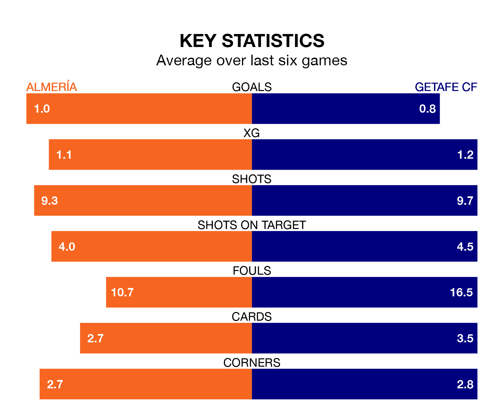

Almería host Getafe CF on Saturday at Power Horse Stadium Estadio de los Juegos Mediterráneos in La Liga.
In their last league match, on Sunday, Almería lost to Villarreal 2-1 at home, with their goal scored by Anthony Lozano.
Getafe drew, 1-1 at home against Real Sociedad, with Óscar Rodríguez scoring their goals.
Almería are bottom of the table after 32 games, of which they have won one and drawn 11, earning 14 points.
Getafe are 10 places ahead of the home team in 10th, with nine wins and 13 draws putting them on 40 points.
In the last 10 years, Almería and Getafe have played each other on nine occasions. Almería won three of them, Getafe five, and they drew once.
On average, Almería scored 0.7 goals and Getafe 1.2 in those matches.
Their last meeting was on November 25, when Getafe won 2-1 at home.
In Borja Mayoral, the visitors have one of the league's most on-form strikers so far this season. He has notched 15 goals in 27 appearances, to sit fourth in the scoring charts.
His goal rate of one every 144 minutes is much quicker than that of Sergio Arribas, Almería's top scorer with a goal every 303 minutes, and a total of six goals in 30 games.
With 31 goals in 32 games so far this season, Almería are scoring at below the league average rate with 1.0 goals per game. And they are conceding more than average, letting in 64 goals at a rate of 2.0 per game.
Getafe are also below average scorers, with 1.2 goals per game, compared to a league average of 1.3. They have conceded 1.4 goals per game.
The hosts are in disappointing form in La Liga, with one win and two draws from their last six games.
With a win and three draws over that period, Getafe's form is slightly better – they have taken six points from 18, compared to Almería's five.
Saturday's match will be refereed by Guillermo Cuadra Fernández, who has taken charge of 16 La Liga games so far this season, issuing seven red cards and booking 81 players. He has awarded five penalties.
The last Almería game Cuadra Fernández refereed was a 3-2 away loss to FC Barcelona on December 20. His last Getafe match was their 1-0 win at home against Valencia CF on December 8.
Updated: 07:59 (UTC), 26/04/24